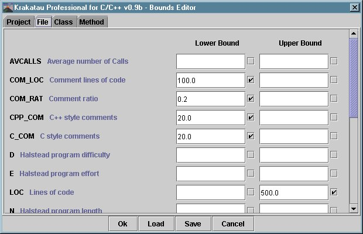

The "Bound Editor" is used to specify bound values for metrics. Below is a screenshot of the Bounds Editor:

The tabs at the top left allow you to view the metrics for the available types of symbols. To set bounds locate the metric that you wish to set a bound for, then type in the value in the entry box. The bound also has to be selected (by clicking on the check box next to the bound).
The metric bounds can be saved and loaded. Note: there is an example bound file (called example.kbf) in the Krakatau directory. This can be used both to view the way that Krakatau displays violating metrics and also as a guide for bounds.